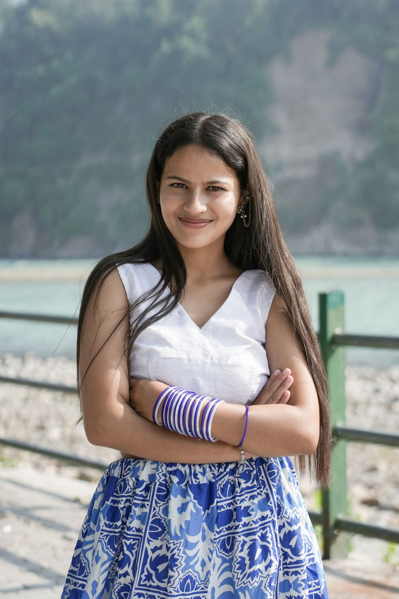
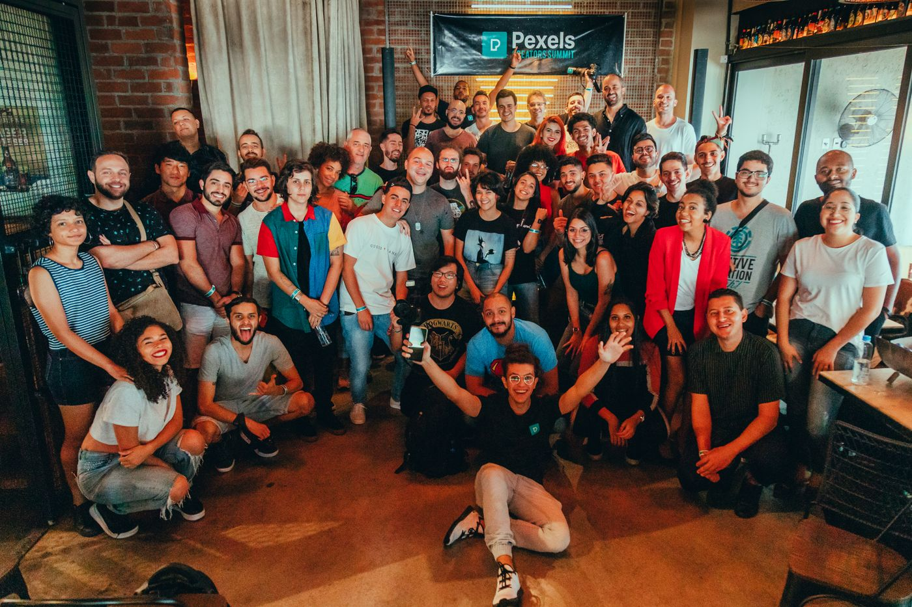
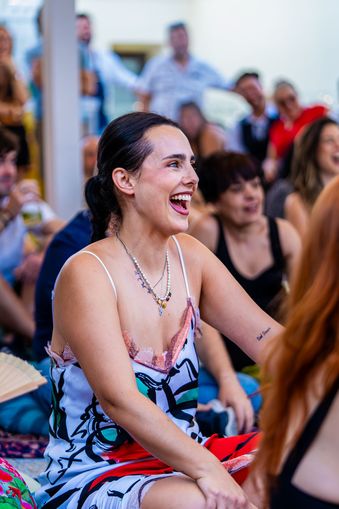

~150kfoto per conferenza
~6.000persone ritrovate
< 1 mindal selfie alla galleria
0password da ricordare


Scelto per la Conferenza 2026Ti cerchiamo tra tutti gli scatti e ti mostriamo solo quelli in cui compari. Niente da sfogliare — e il selfie si cancella subito dopo.

Scelto per la Conferenza 2026Dall'accesso alla tua galleria personale in meno di un minuto.
Dopo un accesso veloce via email, inquadri il viso una volta sola. Lo scatto parte da solo.
Confrontiamo il tuo viso con gli scatti dell'evento in pochi secondi. Senza cercare, senza scorrere.
Vedi solo le foto in cui compari e le scarichi in alta qualità: originale o versione per il web.
Un motore di riconoscimento facciale self-hosted confronta il tuo viso con ogni scatto. Le foto caricate dopo il tuo selfie ti si agganciano da sole.





La tua galleria si prepara da sola e ti avvisiamo via email appena è pronta. Nuove foto dell'evento? Ti vengono aggiunte senza fare di nuovo il selfie.
Trattiamo un dato biometrico con il massimo rispetto: consenso esplicito, spiegato chiaro, e il controllo sempre dalla tua parte.
Un assaggio di come appare una galleria dell'evento.
Trascini la cartella dello shoot dal browser. Deduplichiamo per sha256, riprendiamo da soli dopo un errore, e ogni scatto viene indicizzato man mano. Nessuna ansia da upload.
jpeg, png · fino a 60 MB · ripresa automatica
Le cose che ci chiedono più spesso, con risposte oneste.
Sì. Il file del selfie si cancella subito dopo la ricerca. Resta solo un vettore matematico del volto, legato alla tua galleria, così le foto caricate dopo ti vengono agganciate da sole. Puoi cancellare anche quello quando vuoi.
Nessuna delle due. Accedi con un link che ti mandiamo via email e tutto funziona nel browser del telefono, sul wifi dell'evento.
Le nuove foto dell'evento vengono confrontate con il tuo volto in automatico e, se compari, si aggiungono alla tua galleria. Non devi rifare il selfie.
Nel nostro database, non in un servizio cloud di terzi. Il riconoscimento è self-hosted con un motore open source. È un dato biometrico (GDPR Art. 9) e lo trattiamo come categoria particolare.
Sì: scegli le foto che vuoi e le scarichi in originale o in versione per il web, una alla volta o tutte insieme in uno ZIP.
Un selfie, e sei nella tua galleria. Il resto lo facciamo noi.